📊 指标均值 · 清晰呈现本类素材基准指标，帮你快速定位差距，校准优化方向
消耗(均值)
—增长量(均值)
—CTR (均值)
4.65%CVR (均值)
9.04%3s完播 (均值)
57.4%播放时长(均值)
18.5s📚 方法论沉淀 · 拆解开篇类型核心打法，吃透爆款底层逻辑，轻松拿捏创作节奏
该类别下样本不足或解析尚未跑完，暂无方法论。
需 ≥2 条带『素材结构』的素材才能聚合。
需 ≥2 条带『素材结构』的素材才能聚合。
🏆 代表素材关键帧拆解 · 品牌 / 非品牌各 Top5（按消耗降序）
🏪 品牌素材 Top5（按消耗降序）
#1
消耗 — · 增长量 — · CTR 1.67% · CVR 12.38% · 3s完播 52.4% · 播放时长 8.5s
🎂 转化人群年龄分布 主力 40-50
40- 15.1%40-50 50.6%50+ 34.3%
0-13 0.1%14-18 0.0%19-24 0.1%25-29 0.3%30-34 2.1%35-39 12.5%40-44 23.9%45-49 26.7%50-54 17.9%55-59 9.6%60-64 4.4%65+ 2.4%
开篇类型属于达人口播+明星背书型。开篇男达人以『中年美女必须养成的习惯』为钩子，直接点出粉底液显老的痛点，引出秦岚推荐的某品牌水光好皮霜。接着展示多位博主的卡粉、起皮等真实肌肤问题，形成强烈代入感。重点展示秦岚直播切片背书，强调『没有男人不喜欢化妆的女人』『试过一次就知道为什么推荐』。随后多位达人演示产品上脸效果，突出30秒微光感、四效合一、不卡粉不脱妆等核心卖点。结尾以周年庆大促、买赠福利、现拍现发引导下单转化。
痛点+悬念开场
0-5s
产品亮相
6-13s
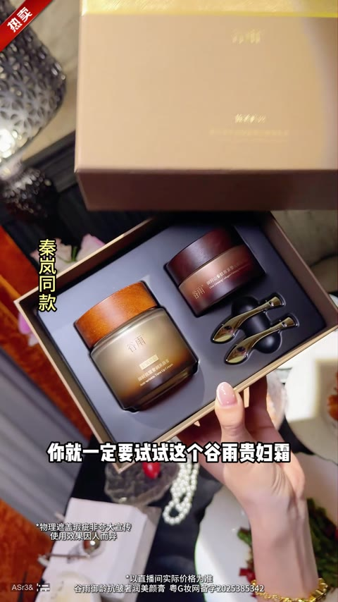
明星背书
14-28s
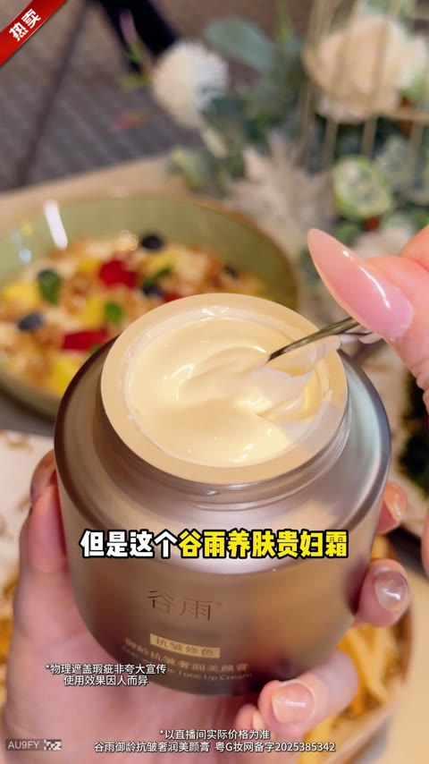
多场景演示
29-43s
卖点轰炸
44-59s
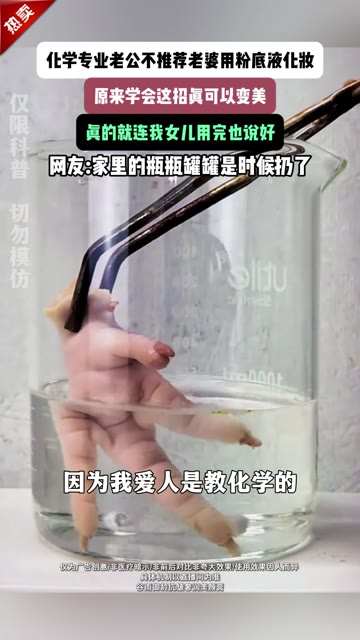
#2
消耗 — · 增长量 — · CTR 1.60% · CVR 11.09% · 3s完播 69.2% · 播放时长 7.3s
🎂 转化人群年龄分布 主力 40-50
40- 36.3%40-50 59.6%50+ 4.0%
14-18 0.0%19-24 0.3%25-29 1.3%30-34 7.6%35-39 27.1%40-44 32.7%45-49 27.0%50-54 2.6%55-59 1.2%60-64 0.2%65+ 0.1%
开篇类型属于人设口播+多达人种草+明星背书型。开篇以『化学专业老公』人设切入，用实验室画面暗示粉底液化学成分危害，引出某品牌素颜霜替代方案。接着展示产品核心成分人参皂苷CK和胶原蛋白肽，强调边上妆边养肤的差异化卖点。重点展示多位达人使用效果，突出妆面干净、不卡粉的视觉对比。穿插秦岚明星推荐切片，建立品牌信任背书。结尾以中秋一折、买一送一的促销信息制造紧迫感，两位古装女性喊话引导下单。

痛点+悬念开场
0-5s

产品亮相
5-15s

效果演示
15-23s
达人种草
23-35s

明星背书
35-48s
#3
消耗 — · 增长量 — · CTR 1.97% · CVR 9.55% · 3s完播 38.1% · 播放时长 11.0s
🎂 转化人群年龄分布 主力 50+
40- 5.7%40-50 27.6%50+ 66.8%
14-18 0.0%19-24 0.1%25-29 0.3%30-34 1.0%35-39 4.2%40-44 10.0%45-49 17.5%50-54 22.0%55-59 20.2%60-64 15.5%65+ 9.0%
开篇类型属于达人口播+痛点引入型。开篇以成熟女性视角切入，抛出『不会打扮显老』的痛点话术，快速建立情感共鸣。接着引出某品牌素颜霜产品，强调『四效合一』概念——妆前乳、底妆、定妆、养肤一步搞定。重点展示产品质地和上脸效果，突出『一抹即化水』『零粉感』『不假白』的使用体验，配合高纯度极光甘草和皂苷CK等成分背书。随后切入街头采访环节，多位女性分享『奶油肌』『伪素颜』的真实使用感受。结尾以周年庆大促收尾，展示丰富赠品组合，强调性价比引导下单。
痛点引入
0-5s
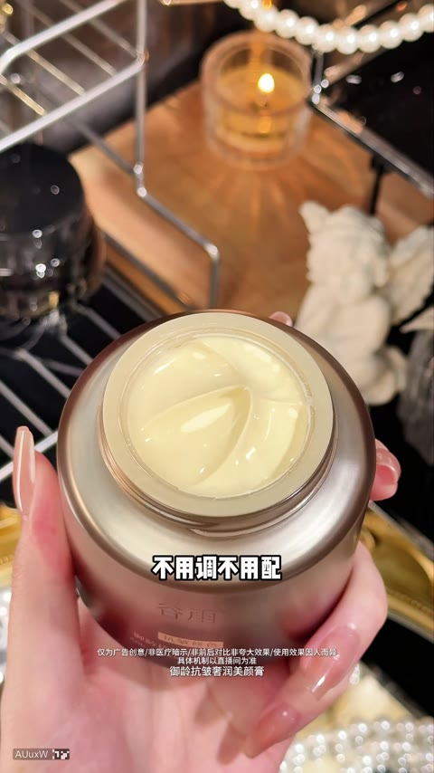
产品亮相
5-11s
卖点轰炸
12-20s
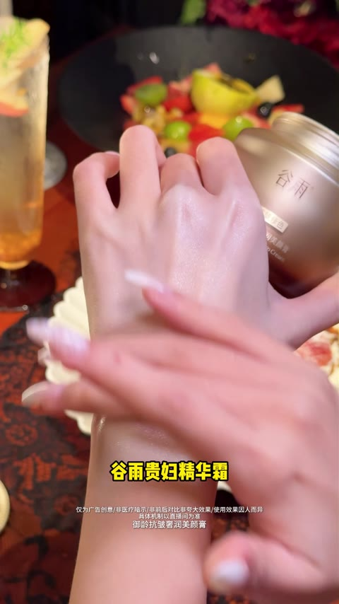
成分背书
21-32s
效果演示
33-53s
#4
消耗 — · 增长量 — · CTR 1.17% · CVR 10.40% · 3s完播 29.8% · 播放时长 5.8s
🎂 转化人群年龄分布 主力 40-50
40- 15.2%40-50 51.3%50+ 33.5%
0-13 0.1%14-18 0.0%19-24 0.1%25-29 0.4%30-34 2.3%35-39 12.2%40-44 24.2%45-49 27.1%50-54 17.2%55-59 9.5%60-64 4.6%65+ 2.2%
开篇类型属于多达人测评+产品卖点轰炸型。开篇达人用气垫涂抹产品，抛出『放弃粉底液发现新大陆』的钩子文案，引出某品牌2.0秋季限定贵妇霜。接着通过纸巾成膜测试展示30秒快速成膜的核心卖点，强调秋季不怕干燥。重点用『第一到第五』的结构化话术轰炸卖点：多效合一、贵妇级养肤精华、白池花籽油、亚洲中性肤色、直播间优惠。穿插多位达人上脸实测画面，展示不假白不发灰的自然妆效。结尾用户外通勤场景证明持久力，最后以买正装送正装的促销信息引导下单。
开篇悬念
0-3s
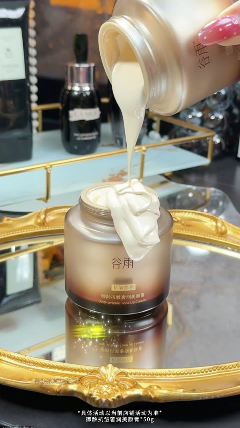
产品亮相
3-6s
效果演示
7-13s
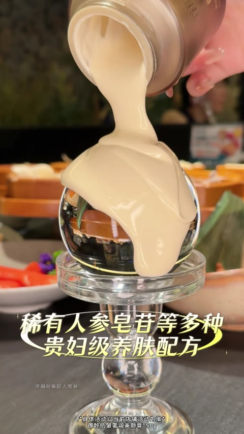
卖点轰炸
14-31s
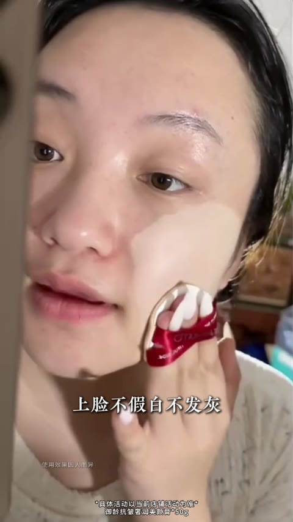
上脸实测
32-43s
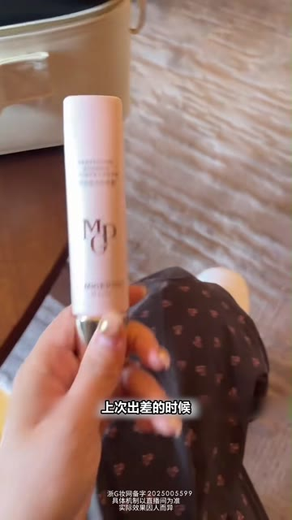
#5
消耗 — · 增长量 — · CTR 2.13% · CVR 9.69% · 3s完播 30.1% · 播放时长 6.0s
🎂 转化人群年龄分布 主力 40-50
40- 32.6%40-50 54.5%50+ 12.9%
0-13 0.0%14-18 0.0%19-24 0.2%25-29 1.7%30-34 7.9%35-39 22.6%40-44 30.6%45-49 23.9%50-54 9.5%55-59 2.6%60-64 0.5%65+ 0.3%
开篇类型属于达人沉浸vlog+产品种草型。开篇达人在出差途中（车内休息、飞机舱）自然引出产品，用『近一年最伟大的发明』制造悬念。接着展示产品质地和上脸手法，强调水润细滑如涂奶油蜜露霜。重点展示蜜桃粉调带来的『年轻皮肤颜色』和『滤镜感』，用左右半脸对比直观呈现提亮效果。然后强调持妆力，带妆12小时依旧粉润透亮。结尾总结产品适用场景：熬夜肌去黄提亮、日常伪素颜快速出门，完成种草闭环。
开篇悬念
0-6s
产品演示
6-15s
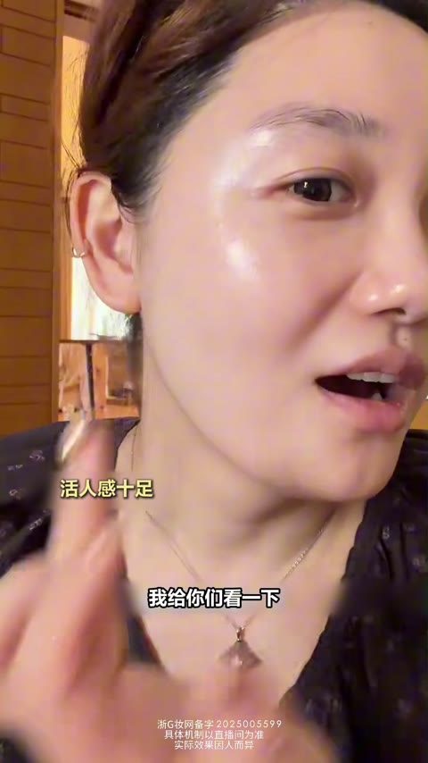
卖点轰炸
15-25s
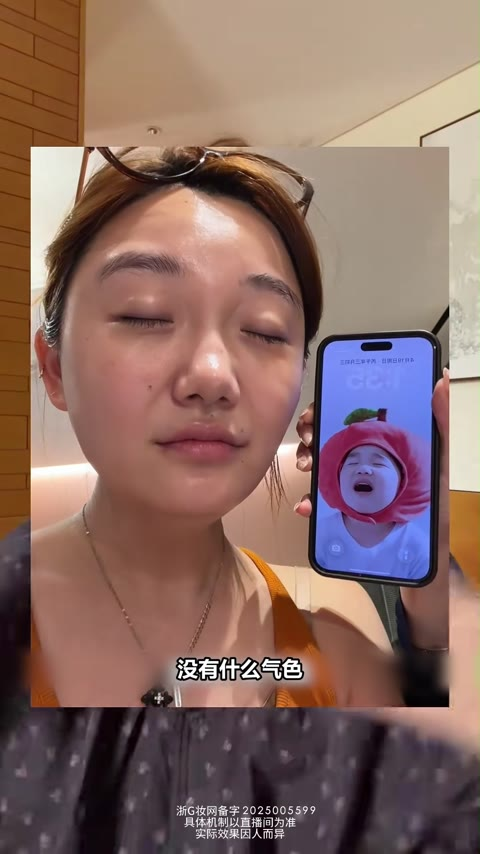
痛点共鸣
25-32s
效果对比
32-44s
🏬 非品牌素材 Top5（按消耗降序）
#1
消耗 — · 增长量 — · CTR 17.92% · CVR 2.13% · 3s完播 67.2% · 播放时长 34.0s
🎂 转化人群年龄分布 主力 50+
40- 15.3%40-50 41.1%50+ 43.5%
19-24 0.1%25-29 0.8%30-34 3.0%35-39 11.5%40-44 19.4%45-49 21.8%50-54 19.5%55-59 13.9%60-64 6.6%65+ 3.5%
开篇类型属于人设口播+维权剧情型。开篇商家手持身份证控诉恶意退款用户，用『求放过』的冲突话术制造悬念吸引停留。接着逐一展示四次退回的空瓶证据，通过真实快递单和空罐对比，反向证明产品好用到让人想薅羊毛。重点展示原版鱼子精华的金黄色料体质感，强调广东药科大学技术支持和人体功效检测报告，建立专业信任。穿插老客户回购证言，强化口碑背书。结尾提及直播间有试用装发放，用体验装降低决策门槛，同时再次强调拒绝薅羊毛行为，塑造商家原则感。
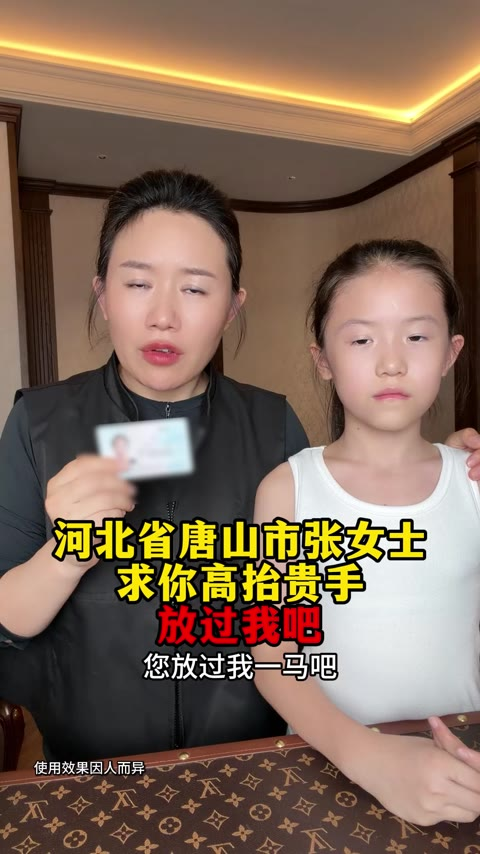
开篇悬念
0-10s
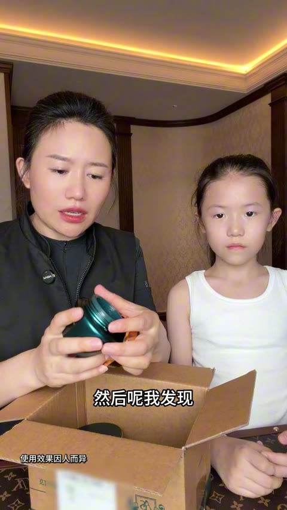
证据展示
10-70s
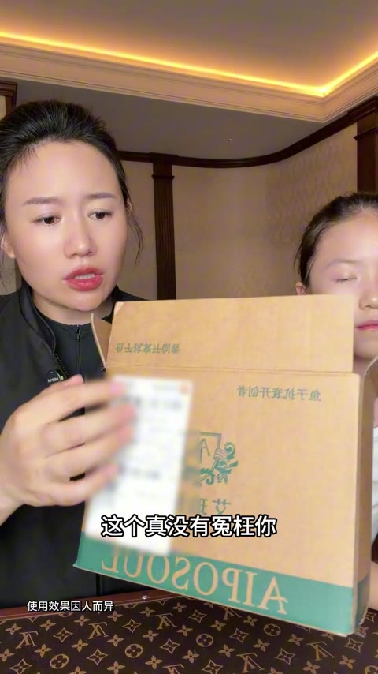
痛点引入
70-90s
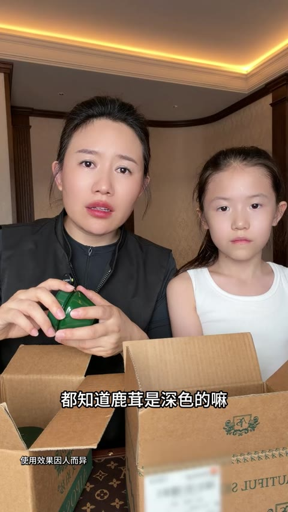
产品亮相
90-120s
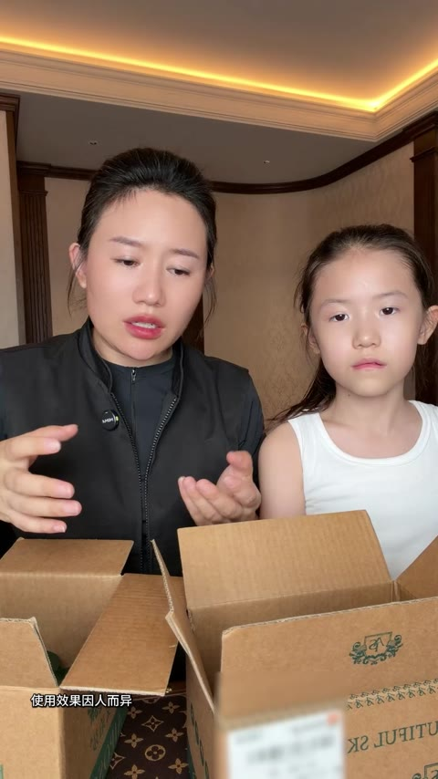
品牌背书
120-150s
#2
消耗 — · 增长量 — · CTR 4.79% · CVR 10.46% · 3s完播 65.2% · 播放时长 17.3s
🎂 转化人群年龄分布 主力 50+
40- 2.4%40-50 11.5%50+ 86.0%
0-13 0.0%19-24 0.2%25-29 0.2%30-34 0.5%35-39 1.4%40-44 3.8%45-49 7.7%50-54 12.1%55-59 16.7%60-64 20.1%65+ 37.1%
开篇类型属于颜值美女+认知颠覆型。开篇展示两位状态极佳的五六十岁优雅女性在公园漫步，配合『不用水乳』的反常识文案制造好奇。接着由达人杨杨引出眼周护理痛点，展示某品牌人参胶原眼油霜的质地与即时紧致效果。重点环节邀请三位体育冠军（刘南希、崔雨涵、戴昊男）进行背书，强化产品权威性。随后切入品牌福利环节，杨杨与丈夫一同宣布『免费试用』『拍一发二』等促销机制。结尾由演员朱泳腾推荐加持，配合街头素人好评，完成信任闭环与下单引导。
开篇悬念
0-3s
痛点引入
3-22s
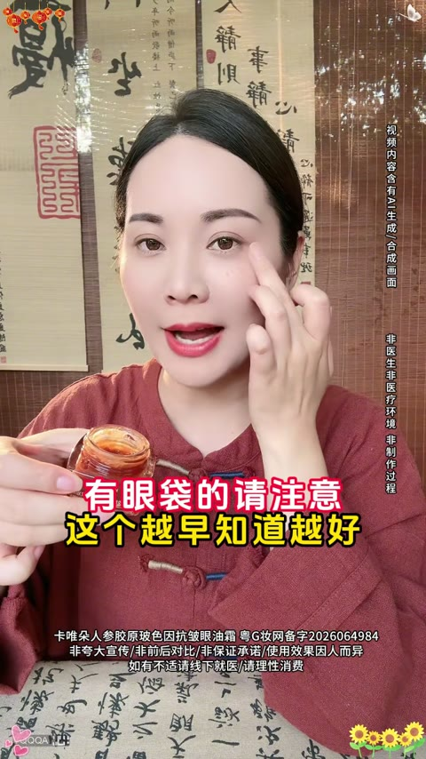
产品演示
23-60s
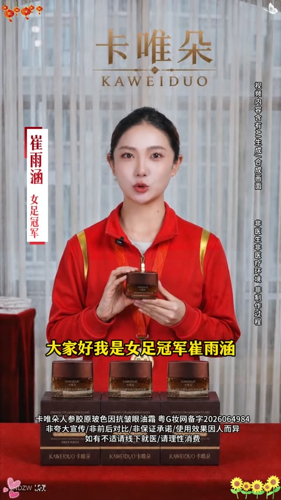
冠军背书
62-75s
限时福利
76-119s
#3
消耗 — · 增长量 — · CTR 6.28% · CVR 9.80% · 3s完播 74.3% · 播放时长 32.1s
🎂 转化人群年龄分布 主力 50+
40- 0.0%40-50 0.0%50+ 100.0%
50-54 3.1%55-59 7.2%60-64 15.2%65+ 74.5%
开篇类型属于素人口播+达人种草型。开篇以70岁银发奶奶害羞捂脸的反差画面切入，用『没脸见人』『被说做项目』制造好奇悬念。接着美妆达人阳阳出镜科普『婆婆纹』痛点，引出郑多燕抗皱精华液产品。随后穿插多位用户户外采访证言，强化产品口碑。重点展示阳阳直播间降价促销，从99元降到全场一折，营造紧迫感。中段加入阳阳防伪提醒，强调正品渠道。结尾以多位旗袍女性路人采访收尾，反复强调限时优惠和正装试用，引导下单转化。
痛点+悬念开场
0-10s
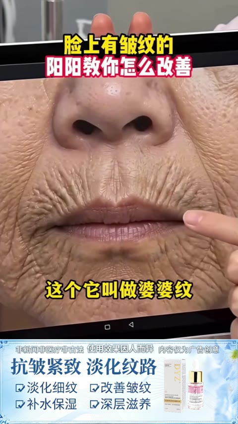
产品亮相
10-19s
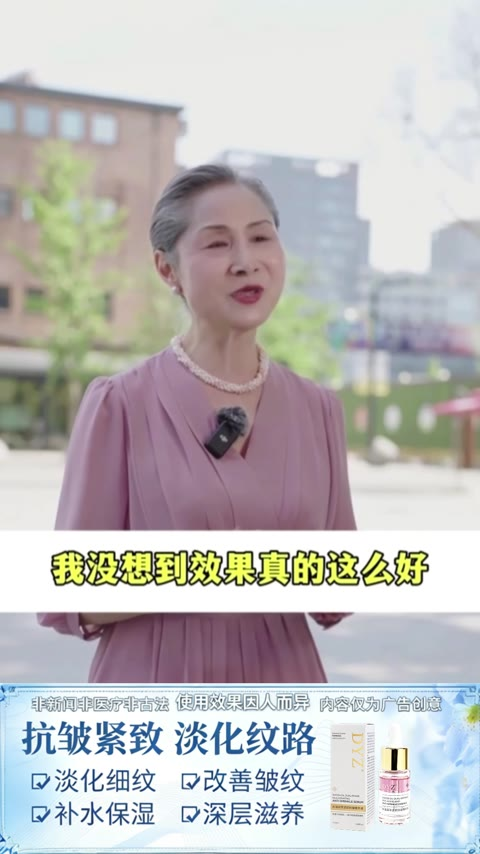
用户证言
19-29s
卖点轰炸
29-41s
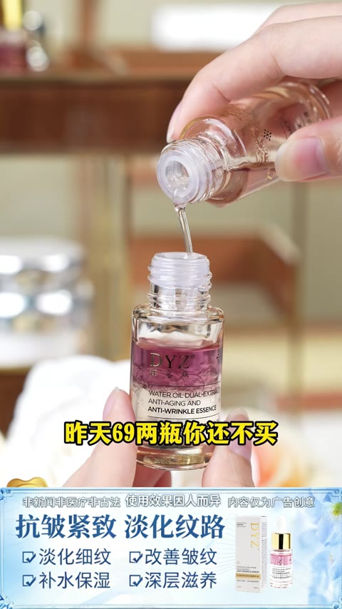
价格促销
41-53s

#4
消耗 — · 增长量 — · CTR 3.64% · CVR 10.70% · 3s完播 40.1% · 播放时长 7.7s
🎂 转化人群年龄分布 主力 50+
40- 2.1%40-50 15.9%50+ 82.0%
0-13 0.1%14-18 0.0%19-24 0.2%25-29 0.2%30-34 0.4%35-39 1.1%40-44 4.0%45-49 11.9%50-54 19.8%55-59 21.9%60-64 20.2%65+ 20.1%
开篇类型属于达人口播痛点咨询+明星背书型。开篇以夜市大排档轻松场景切入，通过向许博士咨询眼部问题自然引出产品话题，降低用户防备心理。接着用眼袋特写配合「老10岁」解说直击衰老焦虑，引发强烈共情。核心段落由于震以推荐官身份出镜，列举王琳、李颖等明星使用案例，并穿插福建刘女士、四川陈先生等真实用户感谢视频建立信任。产品演示环节展示滚珠设计和长白山灵芝等天然成分，强调50年老品牌实力。结尾以直播间砍价形式推出买一送一、99元优惠、30元券等福利组合拳，营造紧迫感促进转化。

痛点咨询开篇
0-14s
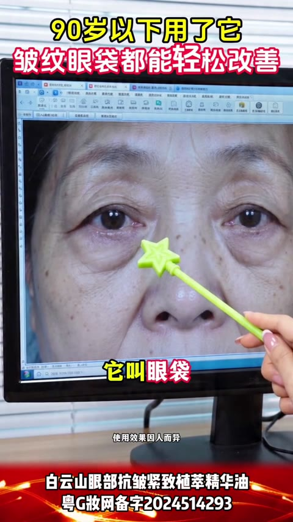
痛点放大
14-23s
明星背书
23-58s
用户证言
39-53s
产品演示
58-95s
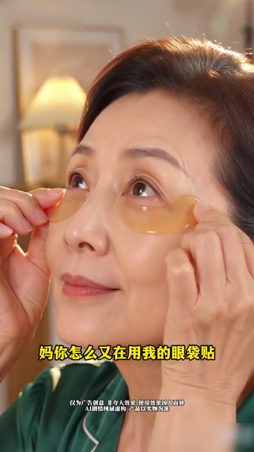
#5
消耗 — · 增长量 — · CTR 2.31% · CVR 11.27% · 3s完播 59.5% · 播放时长 23.6s
🎂 转化人群年龄分布 主力 50+
40- 1.1%40-50 3.2%50+ 95.6%
25-29 0.0%30-34 0.4%35-39 0.7%40-44 1.2%45-49 2.1%50-54 5.1%55-59 11.2%60-64 19.9%65+ 59.4%
开篇类型属于生活剧情+明星背书+促销福利型。开篇以母女居家贴眼膜的温馨剧情切入，女儿发现母亲偷用自己的眼膜贴并夸赞『比我还年轻』，自然引出产品。接着切换到外景记者播报刘晓庆联合阳阳发放万单福利的紧迫信息。重点展示刘晓庆与阳阳的对话推荐，强调40岁以上可领取体验名额，并穿插专家验收环节暗示效果显著。随后通过用户证言『没想到真的这么好用』增强可信度。结尾阳阳携老公发出最后通牒，强调周年庆买一送二、拍一发三的超值福利，引导紧迫下单。
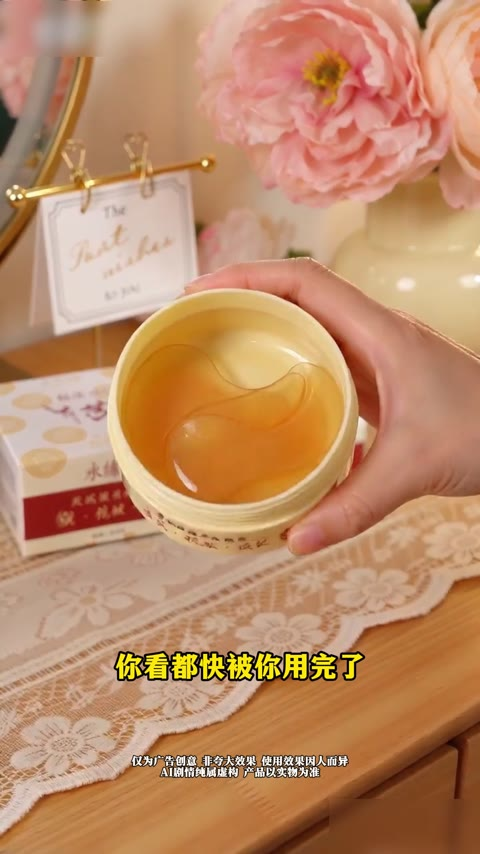
剧情引入
0-9s
福利播报
10-15s
明星背书
16-42s
效果验证
43-50s
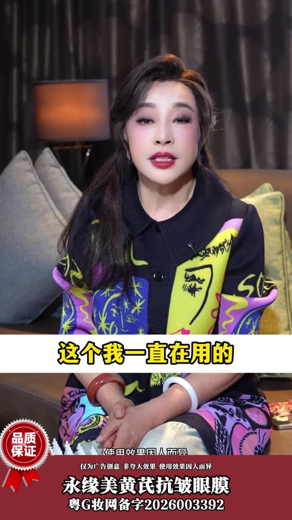
卖点强化
51-67s